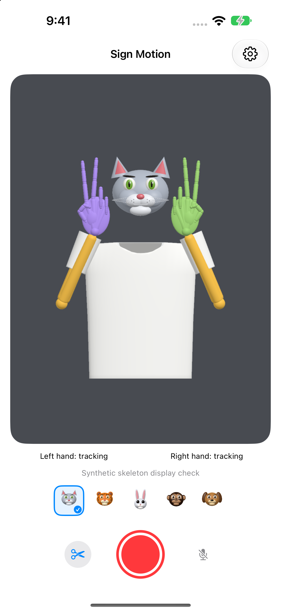

Face to fingertips
See blinks, winks, eyebrows, cheek and mouth movements on the animal face, with colored 3D arms and fingers.
iPhone · iPad
Sign Motion tracks your face, upper body and both hands on your device, displaying five 3D animal faces, colored hands and arms, and a white T-shirt.
Help and support
See blinks, winks, eyebrows, cheek and mouth movements on the animal face, with colored 3D arms and fingers.
Camera footage is not sent to the developer’s server. No account is required.
Avatar MP4 recordings contain rendered motion with no camera footage. Audio is optional. You can also edit captions and trim videos you select.
Requires an iPhone or iPad with iOS or iPadOS 18 or later.
Choose 30 fps or 60 fps camera capture. Supported cameras capture depth alongside video; depth may update more slowly. Capture uses a lower supported rate when the combination is unsupported or load is high. Videos use a 60 fps setting, which does not guarantee 60 new tracking results per second. The previous skeleton is reused when tracking falls behind.
The app does not classify or translate sign language. It does not precisely track the tongue, recognize emotions, identify people or perform medical measurements.